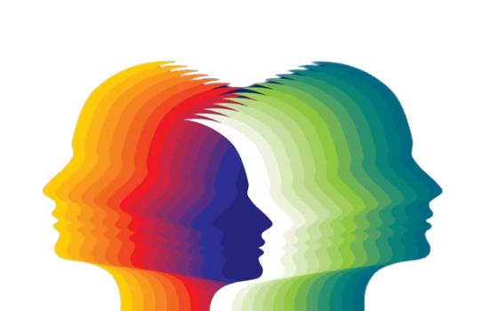
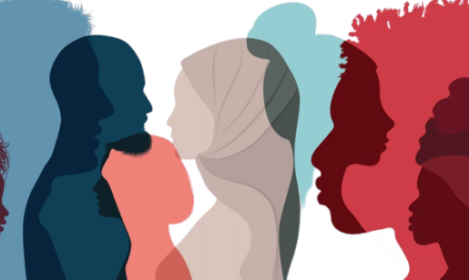

Ciências Sociais
Tudo que você precisa saber sobre os cursos dessa área do conhecimento
O que são as ciências sociais?
Ciências sociais é um ramo das ciências, distinto das humanidades, que estuda os aspectos sociais do mundo humano, ou seja, a vida social de indivíduos e grupos humanos.
Ciências Sociais é uma área científica que estuda a organização das sociedades e culturas atuais. Ela investiga as origens e o desenvolvimento dessas sociedades, bem como as características dos indivíduos e grupos que as compõem. Esta área de estudo é essencial para entendermos melhor o mundo em que vivemos. O curso de Ciências Sociais forma profissionais para estudar as estruturas e relações características das organizações culturais, sociais, políticas e econômicas. Durante o curso, o estudante terá uma sólida formação teórica e científica, para conhecer e compreender as formas de organização e estruturação da vida social do homem. Ele aprenderá a observar, analisar e interpretar criticamente as práticas sociais em toda a sua diversidade espacial e temporal. Ao final do curso, o aluno se qualifica a analisar e interpretar os problemas e conflitos humanos, os movimentos sociais, a formação de opiniões, as dinâmicas demográficas, os sistemas de crenças, entre outros..
O graduando pode optar pelas modalidades bacharelado e licenciatura, sendo que ambas buscam articular as atividades de ensino e de pesquisa. Antropologia, Ciência Política e Sociologia são habilitações específicas de Ciências Sociais, ainda que exista graduação independente nessas áreas. No mercado de trabalho, os cientistas sociais encontram seu maior campo na área de ensino, mas também podem atuar no segmento de políticas públicas, institutos de pesquisa e na área audiovisual, em que são procurados para colaborações na produção de roteiros e na pesquisa. O campo de atuação tem se ampliado nos setores administrativo, legislativo e judicial, com a prestação de consultorias e assessorias especializadas. Os tipos de formação para o curso de Ciências Sociais são: bacharelado, licenciatura, tecnólogo e pós-graduação.
